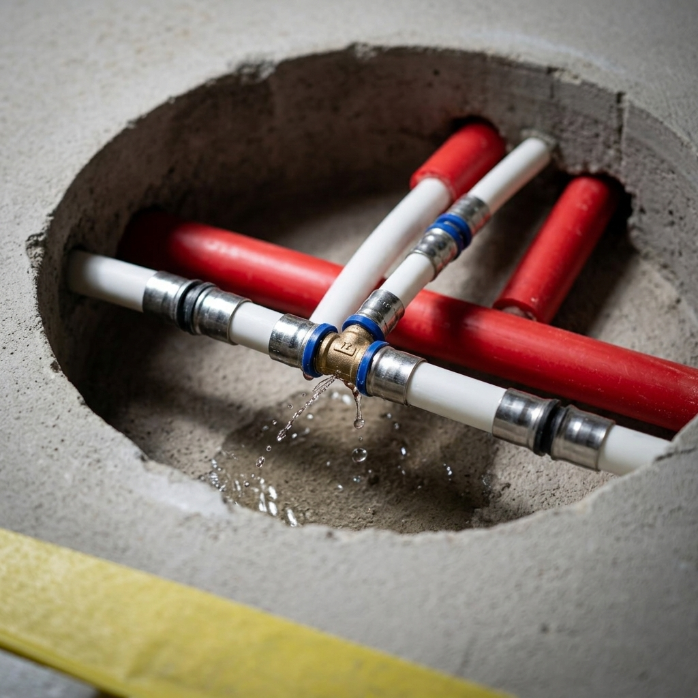

Nasze Usługi — Wrocław & Dolny Śląsk
Precyzyjna diagnostyka wycieków, bezinwazyjna lokalizacja, profesjonalne osuszanie budynków oraz hydroizolacja od wód gruntowych.
Lokalizacja wycieków z rur
Wykorzystujemy metody akustyczne, kamery termowizyjne oraz gaz znacznikowy, aby precyzyjnie wskazać miejsce uszkodzenia rur wodnych i grzewczych ukrytych w ścianach i posadzkach. Dzięki temu unikasz niepotrzebnego kucia całej łazienki czy kuchni.
- Instalacje zimnej i ciepłej wody (Z.W. / C.W.U.)
- Piony kanalizacyjne i rury odpływowe
- Instalacje centralnego ogrzewania (C.O.)

Osuszanie Budynków i Pomieszczeń
Oferujemy profesjonalne osuszanie kondensacyjne i podposadzkowe po awariach hydraulicznych i powodziach. Pomagamy bezpiecznie usunąć wilgoć z murów, posadzek i izolacji podposadzkowej.
Wystawiamy pełną dokumentację i protokoły dla ubezpieczyciela (PZU, Warta, Ergo Hestia itp.).

Hydroizolacja od Wód Gruntowych
Zabezpieczamy piwnice, fundamenty oraz garaże podziemne przed niszczycielskim naporowaniem wód gruntowych i wilgocią podsiąkającą kapilarnie. Stosujemy nowoczesne iniekcje krystaliczne i powłoki uszczelniające.
Usługa szczególnie polecana dla budynków zlokalizowanych w obszarach o wysokim poziomie wód gruntowych na Dolnym Śląsku.